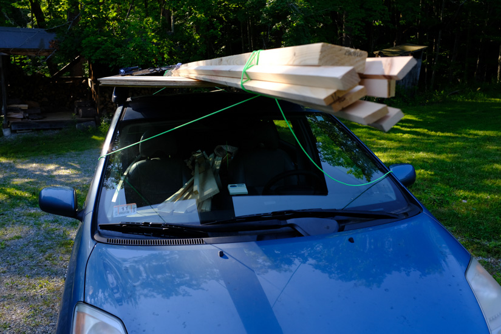
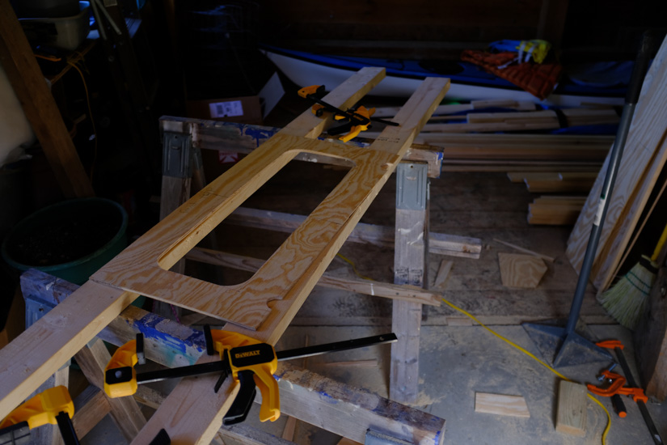
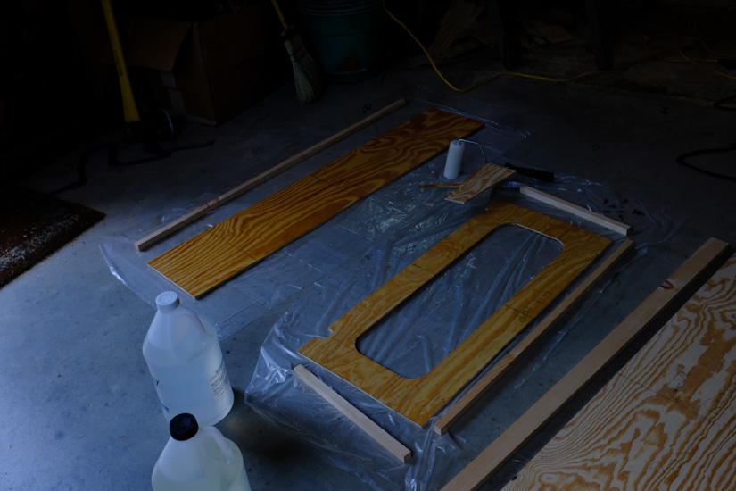
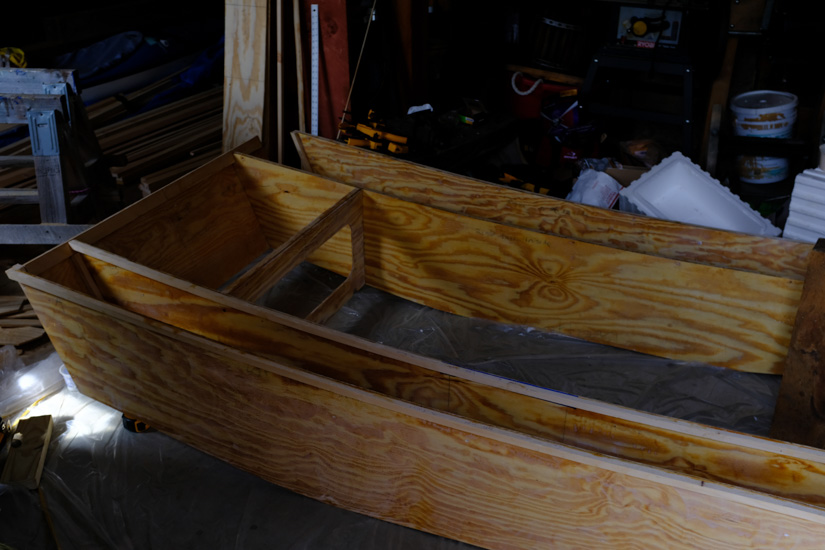
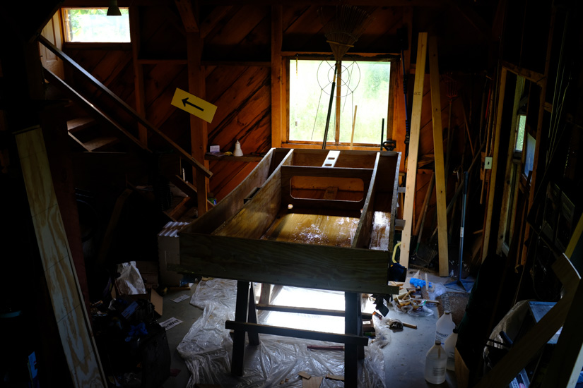
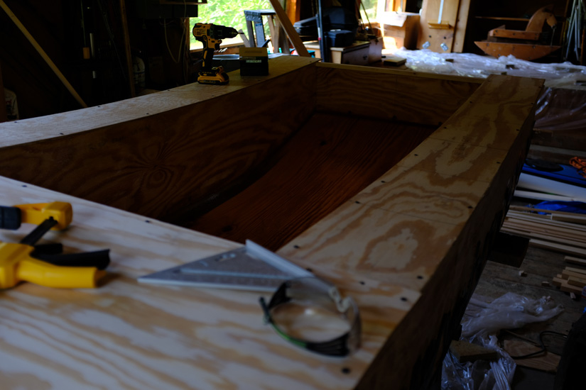
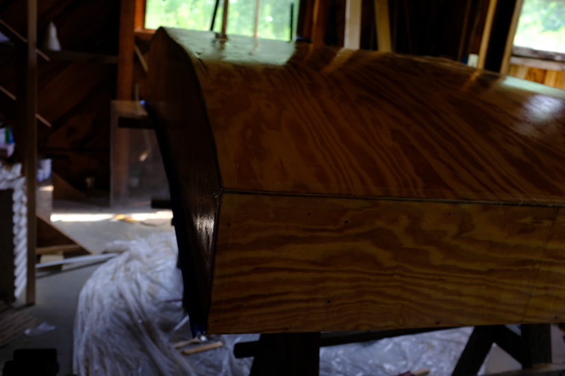
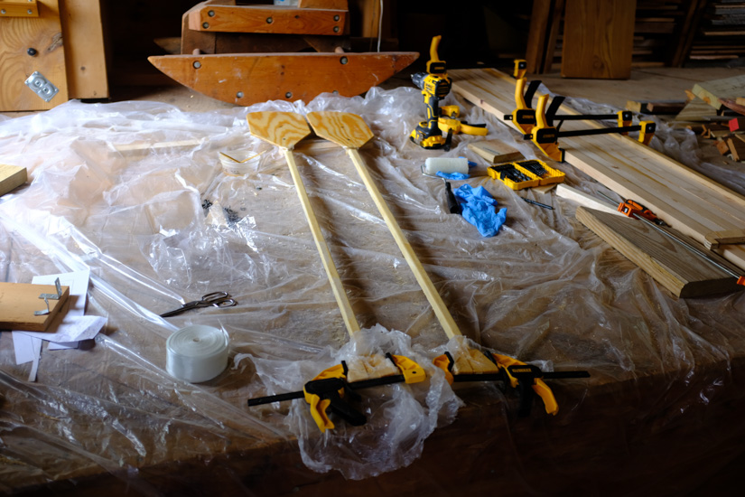

Lumber arranged in part of workplace.
Lumber arranged in part of workplace.From these plans.
Tools Used (in order of frequency):
Note: I did not use a hand plane. I bought one, but it was crappy and the sharpening guide I bought didn’t fit it, so I wasn’t able to sharpen it, and eventually gave up and used the jig saw / belt sander instead (cutting down to close, using sander for the rest), with the exception of narrowing the mast pieces which I used the router for.
Cost: TBD, but roughly $500.
Progress:
In ten full days, I built / painted the main hull, and start on the foils (gluing together the blanks, make part of jig for shaping them) and the mast (scarfing them to full length, shaping the narrow sides). Probably the rest could be done in about five days. As a single person, I’m not sure if it would be possible to do it all that much quicker, especially because all the waiting for glue to dry that is involved.
Work log:
Total: 75.75 hours
Photos:
 Getting all the lumber, post stripping it with a table saw my dad had.
Lumber arranged in part of workplace.
 Marking side panels (first mistake is present in this photo – third and possibly fourth clamp are not in the right place, and the flexible wood batten was so flexible that I was able to make the shape. The bottom is supposed to be a smooth curve! All other panels marked to match this one, replicating the mistake.)
Marking side panels (first mistake is present in this photo – third and possibly fourth clamp are not in the right place, and the flexible wood batten was so flexible that I was able to make the shape. The bottom is supposed to be a smooth curve! All other panels marked to match this one, replicating the mistake.)
 Making more side panels.
Making more side panels.
 Sanding all side panels to be identical.
Sanding all side panels to be identical.
 Cutting forward bulkhead.
 Epoxying rear transom & forward bulkhead.
 Epoxying side panels, attaching framing.
Epoxying side panels, attaching framing.
 Sanding panels, transoms, bulkhead.
Sanding panels, transoms, bulkhead.
 Boat is 3D! No bottom yet though.
 After long and hard day, added mast step / partner, epoxied bottom and with help of dad, attached bottom (involving a bit of work to get the boat square, and then a lot more work to get the bottom to attach to the sides due to the mistake shaping the bottom; had to add more trim and screw through the bottom to get it to pull up to side panels.)
 Dry fitting deck.
 Epoxying bottom of deck.
Epoxying bottom of deck.
 Adding fiberglass tape to seams, epoxying bottom of boat.
 Scarfing mast pieces together and cutting to length. (Though, not pictured here I narrowed them with a router, and messed up the narrowest part, so I think I’m going to switch to a lug sail which requires shorter masts, and thus I can cut off the mistake!)
Scarfing mast pieces together and cutting to length. (Though, not pictured here I narrowed them with a router, and messed up the narrowest part, so I think I’m going to switch to a lug sail which requires shorter masts, and thus I can cut off the mistake!)
 Priming bottom of boat.
Priming bottom of boat.
 Painted & flipped the boat (it’s gotten heavy! Problem with getting plywood from a local lumberyard is that thinnest they had was 1/4“, and I’m sure it’s not the lightest stuff!)
Painted & flipped the boat (it’s gotten heavy! Problem with getting plywood from a local lumberyard is that thinnest they had was 1/4“, and I’m sure it’s not the lightest stuff!)
 Moved outside to paint top.
Moved outside to paint top.
 Primed top and inside.
Primed top and inside.
 Painted top and inside.
Painted top and inside.
 Some really crappy paddles made out of scrap ply, extra 3/4" square with some epoxy added and fiberglass tape wrapped around handle (though I was lazy and only did a single coat of epoxy, so fiberglass tape is still very present. It also hadn’t fully dried when we took it out the next day, so I wrapped duct tape around the handle and halfway down the shaft, so it wouldn’t feel sticky!)